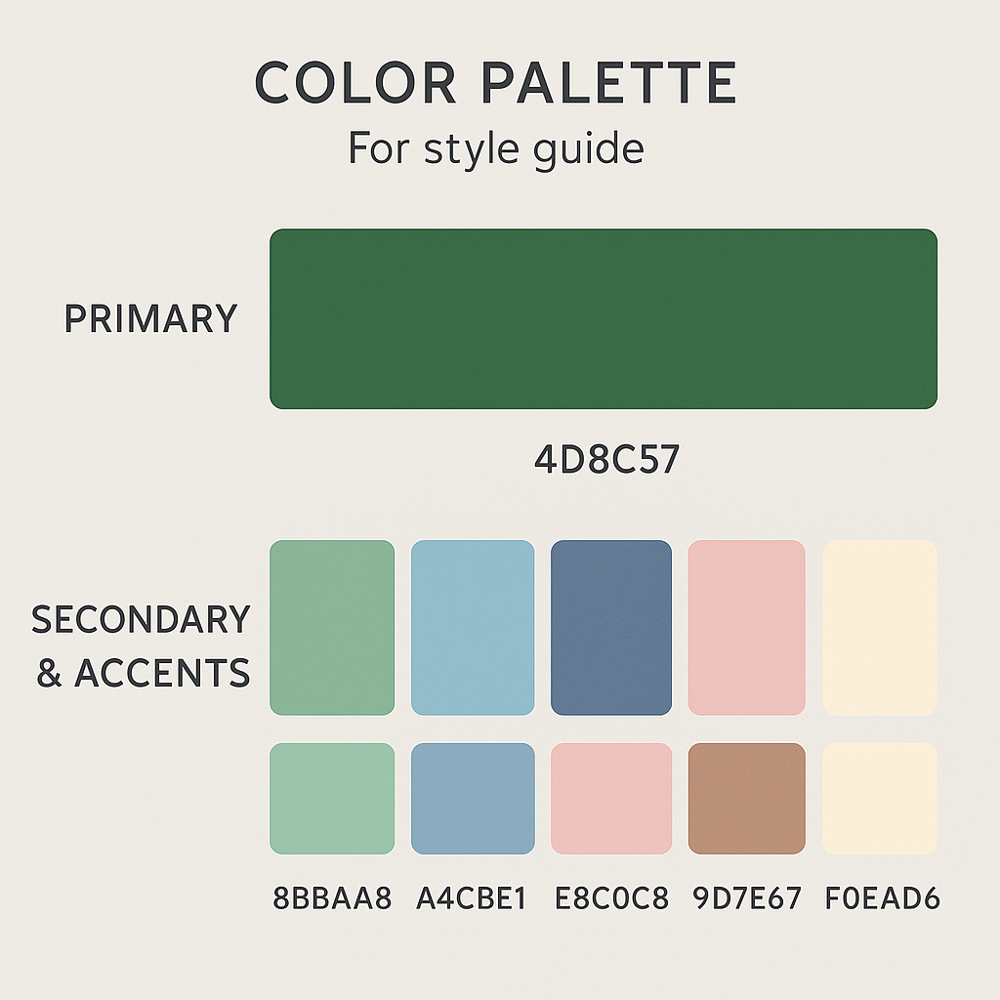

User Alignment
My Goals with this website is to:
- Showcase my technical and creative work, that being my writing, and game design/development etc.
- I also want to establish my professional and creative identity as well as make my work accessible and organized based on what category it is in.
- Provide an organized and user friendly experience for visitors.
Target Users & Needs
Potential Users for my website include:
- Employers & Clients: Looking for a structured portfolio and design process documentation.
- Peers & Writers: Interested in narrative writing, game mechanics, and blog insights.
- Game Developers: Want to see interactive projects, game concepts, and case studies.
These various users would visit the website to:
- explore the projects found in my portfolio
- to evaluate my quality of work and style.
- If anyone is interested in my design process; they would also have access to that detail.
Information Structure - Content Mapping:
Since my website will have a navigation bar that will take users to different pages; which will have their respective content; my content map will include:

- Essays - researched pieces both formal, for academic assignments and informal.
- Blogs - opinion based, and some discussing my design process.
- Portfolio - will consists of Game design projects; Short stories & Narratives etc.
- Design Process- documenting the design process for my website; which various iterations and details of wireframes.
- About - contact information and brief professional biography.
User Experience Mapping:
Basic user flow of website:
- User lands on homepage
- They can navigate to any page/section through the navigation bar; including Essays, Blogs, Portfolio, Design Process and/or About page.
- If they choose Blogs page; they will find various several links to their respective blogs.
Interface Elements:
- Navigation components including Main Navigation bar and tags for blogs & essays.
- Information components including project cards for blogs, essays etc. and preview snippets
- Modal windows/Notification pop ups
Input Controls:
- I would like to add the Portfolio page to have a filter/dropdown button
Info Components:
- Blogs; Essays and Portfolio page will have project cards with thumbnails
- Maybe preview snippets for projects
- Modal windows to show project detail, like when you hover over a project card it would show more detail.
Connection Structure & URL Scheme:
/(Home Page)/essays/(Essays landing page)-
/essays/topic-name/essay-title(Individual essay) /blogs/(Blogs landing Page)-
/blogs/category-name/post-title(Individual blog post) -
/portfolio/(which is the entire portfolio landing page; showing all Portfolio projects) -
/portfolio/game-design/project1(Game design project) -
/portfolio/short-stories-narratives/story-name(Short story) /design-process/(Design process page)/about/(About page)
The URL scheme I'm using:
illustrates the content categories' sequential relationship. makes the site's organization easy to understand and/or intuitive. It helps with SEO by semantically and logically structuring material.
Semantic Markup:
It is the process of showing the meaning of content on a web page using HTML tags. It helps in the comprehension of a web page's structure by users, search engines, and assistive technology.
For the semantic markup...
Development Progress Reflection:
My current implementation aligns with the structure of the website that I have planned on exploring. It does not exactly align with it though. Since I have drafted my wireframes; the navigation bar clearly communicates the structure of the website. The basic HTML can be found on my page but I have not implemented any of the functionality.
Style Guide:
Statement: My website seamlessly blends coding and storytelling, creating an engaging and user-friendly experience that captivates every visitor.
Brand Identity:
The website's design emphasizes storytelling by creating an engaging yet unobtrusive visual experience that highlights interactive media, including short stories, game narratives, and game design projects. A minimalist aesthetic ensures that portfolio pieces, blog posts, and essays remain the focal points without being overshadowed. This balance enhances both the narrative-driven presentation and usability, making the site intuitive, accessible, and easy to navigate while immersing visitors in the creative work.
This website shows my brand identity, which reflects:
- Structure & Functionality -
- Creativity & Expression - Inspired by storytelling, I want it the site to be imaginative and inviting.
- Intuitive & Engaging - I want the website to have seamless interaction and exploration
Color Palette:
Initial Color Palette
Typography:
The Typography I have planned on using was chosen to reflect both technical structure and literary/creative expression.
Typography Principles:
- Clear Hierarchy: H1, H2, H3 sizes for headings & sections.
- Left Aligned Text: For readability in essays and blogs
- Consistent Font Weights: To guide the visitor's eyes naturally
UI Components & Interactive Elements:
-
Navigation Bar:
The Nav Bar is a critical component of the user experience, providing a consistent and intuitive way for visitors to explore different pages. Positioned at the top of the page, it remains fixed as users scroll, ensuring seamless navigation. In the Portfolio Page, The bar will feature dropdown menus for filtering portfolio content, such as game projects and short stories, allowing users to find specific work efficiently. Hover effects will highlight active links, and a slight animation will provide visual feedback when a selection is made. For accessibility, high contrast will be maintained between the text and background, and a clear, readable font will be used.
-
Project Cards:
These serve as interactive thumbnails for website content and items, offering a structured and visually appealing way to present work. Each card will display a representative image, title, and short description. When a user hovers over a card, the background color will subtly shift or expand, and a short preview of additional details will fade in. Clicking a card will either expand it into a modal window or redirect the user to a dedicated project page. These cards will also include small tags or icons indicating the category of work (e.g., "Game Design," "Short Story," "Essay"), helping visitors navigate content based on their interests.
-
Call To Action Elements (Rounded Buttons):
CTA's such as rounded buttons will guide users toward key interactions, such as exploring the portfolio, reading blog posts, or contacting the me. Buttons will be designed with soft, rounded edges to maintain a friendly and approachable aesthetic. Each button will have a designated color based on its importance—primary actions like "View Portfolio" will be in warm peach, while secondary actions like "Read More" will use muted lilac. To reinforce interactivity, buttons will have a slight hover and press effect when clicked, giving the impression of real-world touch feedback.
-
Hover Animations:
Microinteractions will be integrated throughout the website to create an engaging and responsive experience. When users hover over a button, it will slightly darken or shift in color, indicating interactivity. Icons will feature a subtle bounce or color transition when hovered over, providing visual feedback. Project and Blog cards may have a gentle zoom effect when hovered to create a sense of depth. These small interactions ensure that users feel connected to the interface without overwhelming them with excessive motion or distractions
-
Icons:
These will play an important role in the navigation and interaction design, serving as visual guides for users. The design will maintain consistency by using outlined icons throughout the site. These icons will include social media links such as GitHub and Itch.io back and forward arrows for navigation, and play or download buttons for interactive content. To ensure clarity, all icons will be kept at a consistent size, with sufficient spacing between elements to prevent visual clutter.
These dynamic components work together to keep the website interesting, user-friendly, and accessible. A well-designed navigation system will make it easy for users to browse the website, and the animations and transitions i have planned will hopefully make interactions feel fluid and natural. The objective is to produce an experience that captures the dual character of the my work work: Immersive and Expressive like storytelling, but also Structured and Logical.
Layout & Composition:
I want to create an ideally structured but visually interesting experienceing for the visitors of the website. To this I am planning on making using of the following:
- Grid-Based Layout - The Project and Blog Cards will be organized in this manner.
- Use of White Space - This is to ensure that the site feels clean, breathable and not overwhelming.
- Information Hierarchy - Clear Typography, spacing, and good focus on complementing colors.
- Balance - I also want to there to be a balance between Tech and Creative Visuals, near pastel-dark fantasy aesthetics meet structured UI to match my brand Identity of being both a Storyteller; and Game & Web Developer
Initial Wireframe:
Wireframes & Layout Planning:
Reference Material & Design Inspiration:
The design was influenced by a combination of game UI trends, storytelling-focused portfolios, and developer-friendly layouts.
I especially like the layout of how the game projects were showcased. With the genre and description included.
I like how that the cover of the short story/narrative is show as a thumbnail. The author, published date genre and name of the piece is also highlighted on the left. The synopsis is also descripbed just on the bottom. The website also has Recent Posts and a categories filter and search section which I want to include in my Portfolio page.
Find Above Reference Material Here.
Second Iterations: Design Evolution
As my design process progressed, I refined my initial concepts based on user feedback and deeper understanding of my goals. This section documents the evolution of the website design through its second iteration phase.
Style Guide Refinement
Goal & Aesthetic Statement: "My portfolio creates a harmonious blend between structured code and fluid storytelling, offering visitors a journey through my technical expertise and creative narratives within an intuitive, visually cohesive space."
Visual Design Elements
- Clean Grid Layout: Organized structure with sufficient whitespace to enhance readability
- Soft Shadows: Subtle depth effects on cards and interactive elements
- Rounded Corners: On cards, buttons and containers (8px radius) for approachable feel
- Minimal Animations: Subtle hover states and transitions (0.3s ease) for enhanced usability
- Iconography: Consistent outline-style icons at 24px for navigation and social links
Refined Color Palette:
This refined palette creates stronger visual hierarchy while maintaining the balance between technical precision and creative expression.
Typography System
Montserrat
Regular text for UI elements (400)
Medium for subheadings (500)
Bold for navigation and CTAs (700)
Playfair Display
Regular for headings (400)
Bold for featured content titles (700)
Source Code Pro
For code snippets and technical elements (400)
Font sizes follow a modular scale with 16px base:
- Body text: 16px (1rem)
- H3: 20px (1.25rem)
- H2: 24px (1.5rem)
- H1: 32px (2rem)
Final Design Sketches & Wireframes
These wireframes represent the refined design direction after incorporating feedback from initial concepts.

Home Page - Second Iteration
- Hero Section: Simplified with focused value proposition and clear CTA button
- Featured Projects: Horizontal scrolling cards with hover states
- About Preview: Condensed section with immediate call to portfolio
- Navigation: Fixed position with dropdown indicators for sub-menus

Portfolio Page - Second Iteration
- Filter System: Category tabs with active state indicators
- Project Cards: Uniform grid with consistent image aspect ratios
- Information Display: Title, category tag, and brief description on hover
- Interaction Points: Click area covers entire card for better mobile usability

Blog Detail Page - Second Iteration
- Header Area: Featured image with overlay title and metadata
- Reading Progress: Scroll indicator showing position in article
- Content Layout: Limited width for optimal readability (65-75 characters per line)
- Navigation: Previous/next post links at bottom of content
- Related Content: Similar posts recommended at article conclusion
User Flow Refinements

The refined user flow focuses on:
- Entry Points: Multiple pathways to discover content based on user interest
- Reduced Friction: Minimized clicks required to reach significant content
- Clear Pathways: Intuitive navigation between related content types
- Exit Points: Strategic placement of CTAs for contact or social engagement
Interaction Design Specifications
Button States
- Default: Solid background with 8px border radius
- Hover: 10% darker background color, subtle scale (1.02)
- Active/Pressed: 20% darker background, scale (0.98)
- Focus: 2px outline in accent color with 2px offset
Card Interactions
- Default: Flat card with subtle shadow
- Hover: Elevated shadow (y-offset: 6px), slight scale (1.03)
- Additional Info: Description slides up from bottom on hover
- Transition: All changes animate at 0.3s ease-in-out
Navigation Elements
- Main Nav: Underline animation on hover, bold text for active page
- Dropdown: Appears with fade-in (0.2s) and slight downward movement
- Mobile Menu: Slide-in from right with overlay background
- Breadcrumbs: Added to internal pages for enhanced navigation context
Responsive Design Considerations
The second iteration includes detailed breakpoint planning:
- Mobile (under 640px): Single column layout, hamburger menu, reduced padding
- Tablet (641px-1024px): Two-column grid for cards, condensed navigation
- Desktop (1025px+): Three or four-column grid, expanded navigation
- Large Desktop (1440px+): Maximum content width of 1200px with centered layout
Key responsive adaptations include:
- Font size reduction of 10-15% on mobile devices
- Touch-friendly tap targets (minimum 44px × 44px) for mobile interfaces
- Collapsible sections on smaller screens to prioritize critical content
- Image optimization with responsive srcset attributes for different viewport sizes
Implementation Roadmap
Based on these refined designs, the implementation will proceed in the following phases:
- Phase 1: Core layout and navigation structure
- Phase 2: Portfolio and project showcases
- Phase 3: Blog and essay content integration
- Phase 4: Interactive elements and animations
- Phase 5: Responsive optimizations and testing
This phased approach allows for continuous evaluation and refinement throughout the development process.